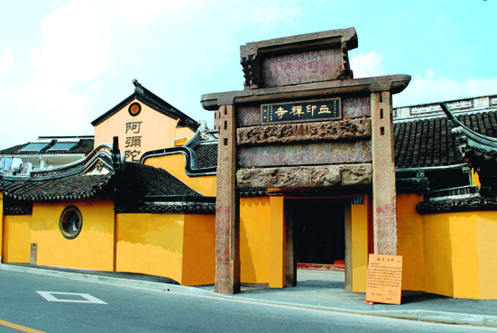

嘉兴市文物保护网 · 市级文物保护单位 · 2014-06-17 · 原文

血印禅寺位于嘉兴市南湖区新兴街道明月社区三塔路547号，俗称血印和尚庙。寺前的司宪牌坊为明代遗物，石牌坊西立柱下，有块铁锈色的印迹，宛然象个和尚侧影，百姓称这石柱为“血印柱”。据清乾隆《嘉兴府典故纂要续编》和1996年编《嘉兴市志》载，关于“血印”的传说有两种：一是明嘉靖年间倭寇侵犯，倭寇将大批妇女关在寺中，叫寺里一和尚看守，倭寇外出抢掠时，和尚放走妇女，倭寇回来大怒，将和尚绑在石柱上乱箭射死，血迹染成人形；二是清顺治二年（1645）清军占嘉兴，清兵抢掠大批妇女，关在岳王祠中，叫寺中一和尚看守，这和尚待清兵出去放走妇女，清兵回来大怒，将和尚绑在司宪牌坊下石柱上乱箭射死，血迹染成人形，血印虽久经风雨而形影不褪。由于不知和尚姓氏，所以人们叫他“血印和尚”。后人为称颂其舍己救人的精神，于民国14年 (1925) 建血印禅院。民国18年（1929），民国政府嘉兴县长危道丰改此地作“血印禅祠”，后又改作“血印禅寺”。该寺占地面积1110平方米，共有大殿2间、厢房3间、厨房1间，除正殿大雄宝殿为民国时期建筑外，其余皆上世纪80年代添置。数百年间，血印和尚的事迹在嘉兴民间广泛传播，血印禅寺也成为一方名寺，具有较高的历史价值。1981年公布为嘉兴市级文物保护单位。